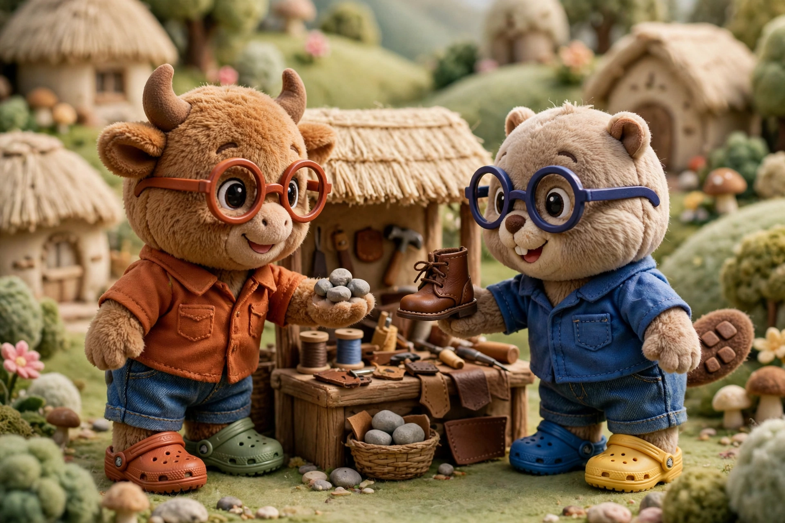
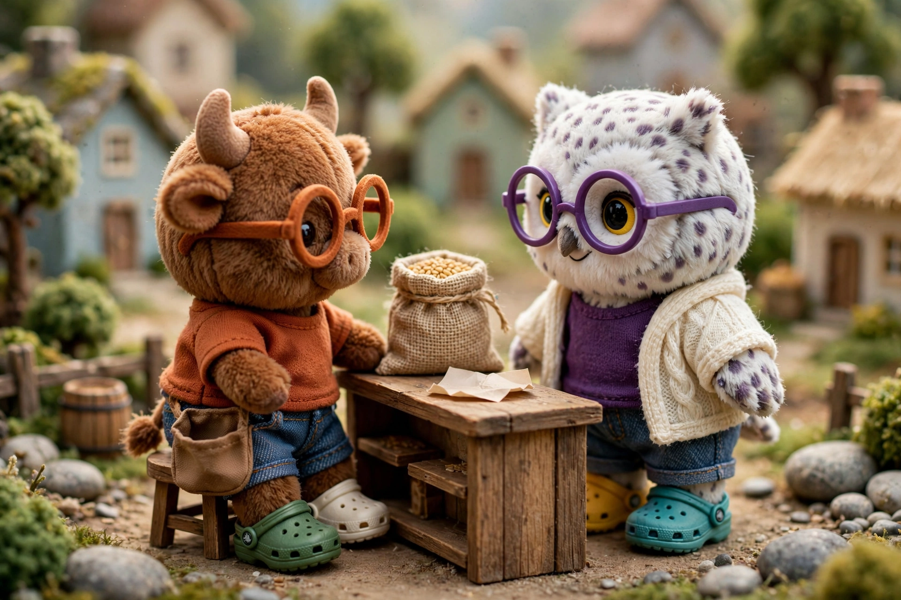
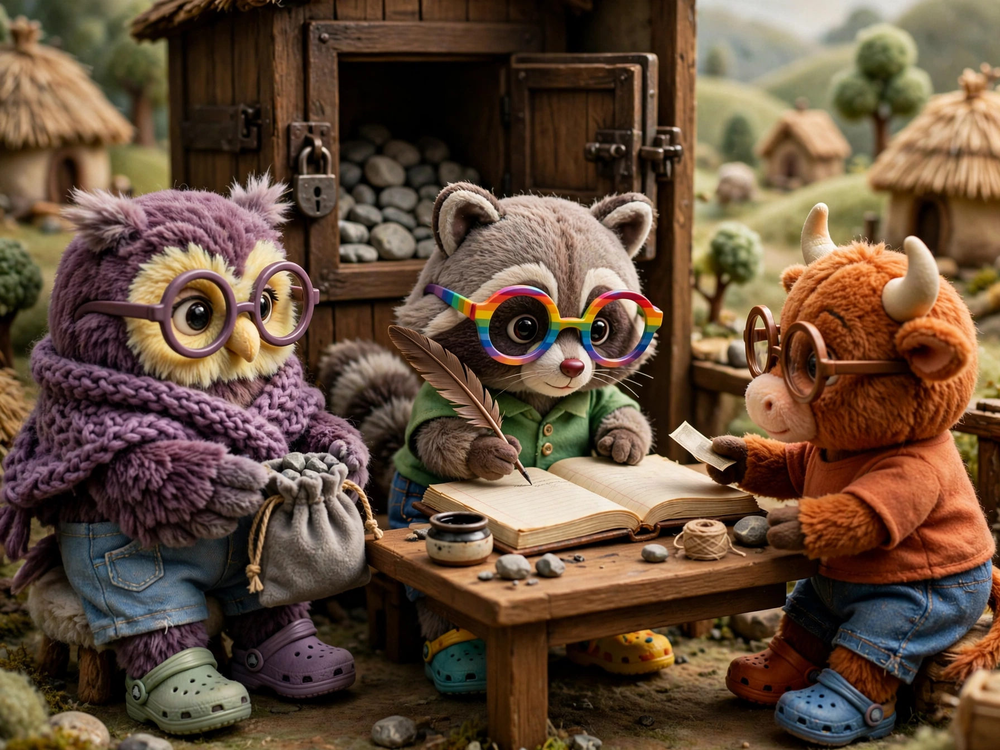
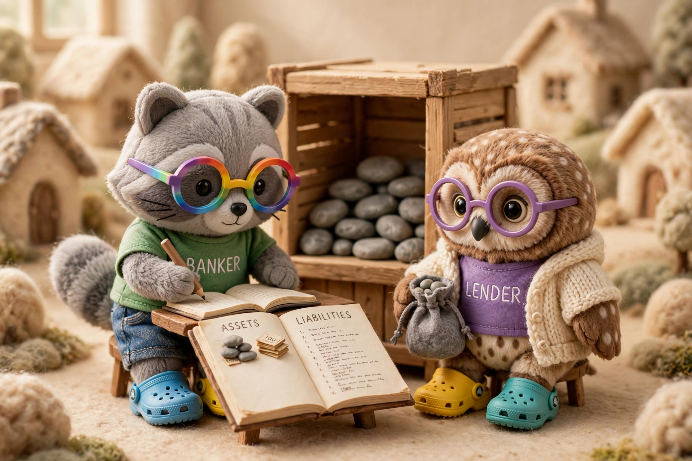
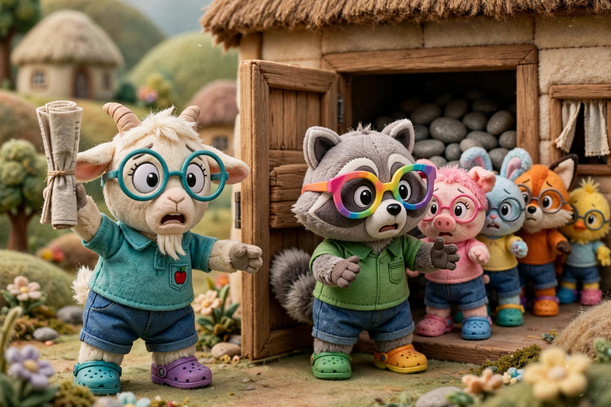
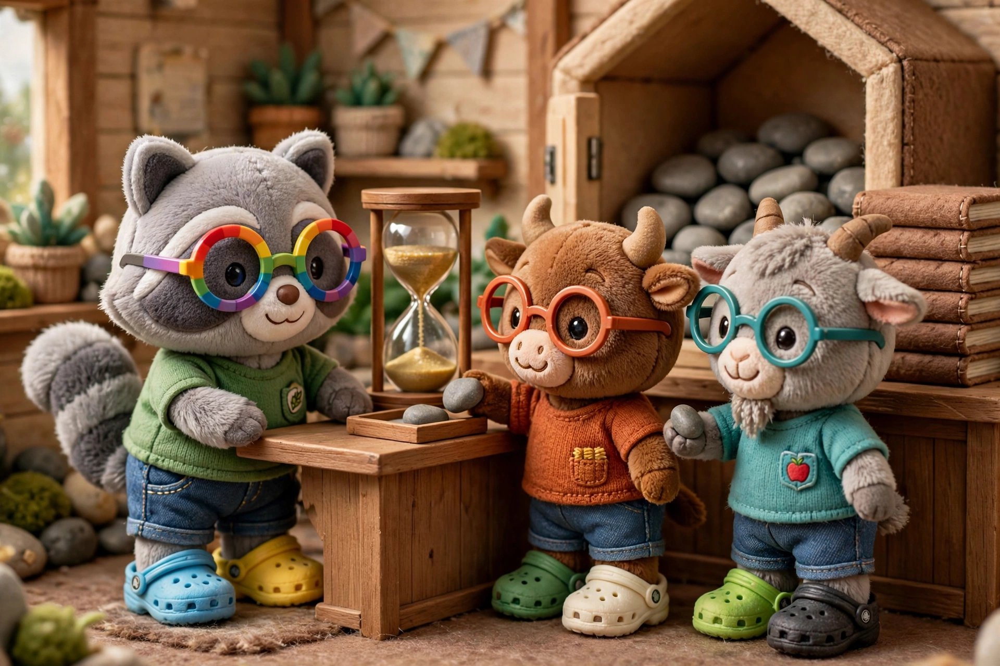

Intermediation
Money

The villagers are tired of bartering. The dairy farmer wants to buy corn, even when he does not have milk to trade, and the corn farmer wants to buy meat, even when the butcher does not want corn. So they decide that special gray stones that they can collect from a nearby riverbed will represent an abstract unit of value, called money. They reason that if everyone uses stones to represent value, then people can transact when they would like, rather than when both parties are willing and able to barter. The villagers have abstracted value.
Supply
The villagers picked special gray stones to be money because the stones were portable, durable, and most importantly hard to collect. The only way to get them was to walk an hour outside of town and spend all day sifting through the riverbed. Sometimes, a villager would do this and only find one or two special stones. And so like any other job—winemaking, farming, cobbling—the job of collecting stones was self-regulated by the value of the activity. If the villagers collected too many stones, like they did after a flood cut open a new seam of special stones in the riverbed, then the cost of goods would go up and the relative value of stones, and thus collecting them, would go down. Or vice versa. So the villagers decided that anyone could collect stones, just as anyone could forage for berries or dye cloth. More or fewer people would do it as demand changed.
Debt

The bull has a problem with money. He raises cows, but this takes a long time, much longer than it takes the dairy farmer to gather fresh eggs. He must go long periods of time without earning more stones. So the villagers decide that some people can simply pay for goods later. The two parties just record the details of the trade on a piece of paper and settle up later. The person who owes money is said to have debt, while the person who is owed money is said to have credit. For example, the woman who owns the general store in town is happy to let the bull buy on credit, since she has known him since they were both children. However, she does not sell on credit to strangers or to people who do not pay their debts.
Interest
While the general store owner is happy for the bull to buy on credit, the beaver is not. He too trusts the bull, but he wants money now to expand his business. Since the beaver would not be paid in stones for a year—it takes a long time to raise a cow—, the beaver cannot use that money to buy new tools or hire an assistant in the meantime. Having stones today is better than having stones in a year. So the beaver makes a deal with the bull: the bull can have boots today but pay for them in a year; however, rather than paying one hundred stones for the new boots, the bull must pay one hundred and five stones. The extra five stones are for the lost value of not having money sooner. The villagers like this idea and adopt it. Soon, all debt is repaid with excess stones, which the villagers call interest. The villagers have created the time-value of money.
Bank

The bull still has a problem. He can buy on credit from the general store and from the beaver, but most stores in town will not lend to him, since they do not know or trust him. The raccoon wonders about this problem. He notices that the bull needs to buy on credit, but none of the stores he needs to buy from will lend, while the owl across town keeps a hundred stones in a jar in her cupboard, but has no friends who need the money. The raccoon has a clever idea. First, he borrows the stones from the owl, and he promises to return them in one year with an interest of three stones. And then he lends these stones to the bull, on the condition that the bull pays him five stones of interest in a year. The business plan is to make the spread, two stones, in a year’s time. This works because the raccoon knows both the owl and the bull. Over time, word spreads, and many villagers who want to borrow or lend come to him. The raccoon calls his business a bank. The bank is very profitable, and over time, many banks pop up in the village.
Balance

Eventually, the raccoon is borrowing and lending from so many people that there is no correspondance of one person’s lent stones to another person’s debt. At the end of the year, when the owl asks for her money back, the raccoon goes into his storehouse to fetch some stones he hasn’t yet lent and gives them to her. He does not even know if they are the stones repaid by the bull or not, but it does not matter. He even starts letting customers ask for their stones back whenever they would like, to encourage more people to deposit stones. However, this creates a problem: the number of stones in the raccoon’s storehouse tells him very little. If someone lends him five hundred stones, and then he lends four hundred of those, he will have one hundred stones in his storehouse. But this is a very different situation than the one in which someone simply deposits a hundred stones. So the raccoon begins to track two lists. On one list, he records everything the bank owns or is owed: the stones in the storehouse and the debt owed by borrowers. He calls these his assets. On the other list, he records everything the bank owes to others, namely deposits. He calls these his liabilities. When a villager deposits fifty stones, the raccoon records fifty stones in liabilities and fifty stones in assets. He calls these two lists his balance sheet, since the bank’s assets must equal its liabilities. Counting his stones in his storehouse only tells him what he has now; his balance sheet tells him what he is owed and what he has promised.
Illiquidity

One morning, the goat walks by his bank and notices a queue. The bank isn’t even open yet. He asks around, and the people in line say that they heard a rumor that this bank had been lending aggressively and even made some bad loans. Those in line didn’t want their stones to go missing, so they were about to pull their money out. The goat thinks about it, and decides to wait in line too. By the time the bank opens, there is a very large line. The raccoon panics. He dutifully gives out all the stones that he can, but eventually he runs out of stones in his storehouse, and there is still a line of people demanding their stones. The raccoon is frustrated. He knows that his balance sheet balances! He is owed many stones from various villagers. But he does not have the stones now. He does everything he can. For example, the winemaker is late to repay a debt, but the raccoon and the winemaker are friends, so the raccoon has allowed the debt to persist. Now the raccoon forces the winemaker to sell her wine early, at a discount, in order to be repaid today. By nightfall, he asks the remaining villagers to come back the next morning. Then he goes to to the badger, the owner of a much larger bank with more stones, and he sells them his balance sheet at a discount. For example, one villager owes the raccoon two hundred stones in one year’s time. The raccoon is only able to sell this loan for one hundred and fifty stones, because the larger bank knows he is in trouble. And thus, the smaller bank is forced to close, and the bigger bank assumes his assets and his liabilities. The next morning, the larger bank starts giving money to any depositer that wants their money back, but people stop panicking once they realize the larger bank is the backstop. However, because of this panic, wealth in the village is destroyed. The winemaker was forced to sell good wine at a discount, and the raccoon was forced to sell his good debt at a discount.
Speculation

The bankers realize that their business model is inherently fragile due to this timing mismatch: villagers can ask for their deposited stones back before the bank earns back its loans plus interest. If all the depositers were to do this at once, the bank would simply run out of stones. So different bankers experiment with different banking models. For example, one banker does not make money by collecting a spread. Rather, she safekeeps peoples money and charges them interest to do so. Another banker only allows people to withdraw their deposited stones at fixed times, giving him time to ensure he has had some of his loans repaid in order to match the outflowing stones. However, the raccoon’s business model is the most popular, because people get paid to store their money and can withdraw it as they wish. Most villagers are happy to accept the risk of a bank running out of money in exchange for being paid interest while still being able to withdraw their money at any time. Much like planting corn is a speculative investment—one could pay money for seed and yield no crop—the villagers realize that depositing money at the bank is a kind of speculative investment. But they are happy to take this risk because they expect to get paid interest.